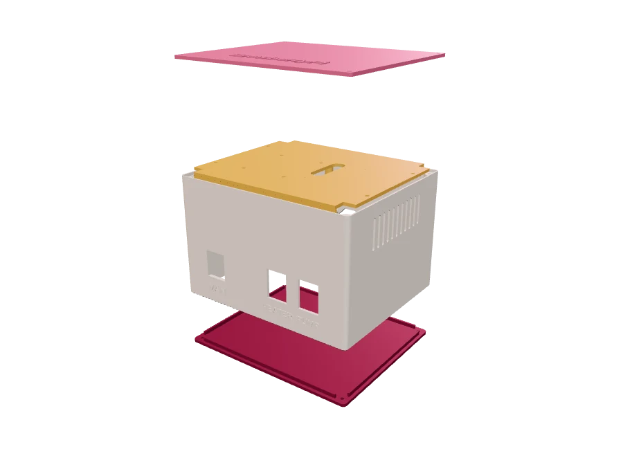

In development · follow along on GitHub
BrewberryPiThe DIY Homebrewing Controller for Raspberry Pi
A Raspberry Pi controller for an electric mash kettle: software that runs your recipe, and a 3D-printable case that holds the electronics.


How it works
From the kettle
to your phone.
The Pi reads the temperature in the mash and switches the heater and the pump through a relay board. You follow the brew on your phone. In the BrewberryPi case, the Pi and the relay board sit together in one box.
- Raspberry PiRuns the BrewberryPi software. The relay board and the probe connect to its GPIO pins.
- Relay boardGets mains from the power plug and switches the heater and the pump.
- Kettle with heating elementYour electric mash kettle. Its heating element is switched by the first relay.
- Pump or stirrerKeeps the mash moving. Switched by the second relay.
- Temperature probeA waterproof DS18B20 in the mash, wired to the GPIO pins.
- Your phoneTalks to the Pi over Wi-Fi and opens the app in the browser. Nothing to install.
Get started
From parts to first brew
in three steps.
-

1Print, assemble and wire
Print the case, assemble the Pi, the relay board and the power parts in it, and wire the probe and the buzzer. The wiring guide shows every pin.
-
2
Flash the image
Write BrewberryPi OS to an SD card with Raspberry Pi Imager; the app is included. Set a host name and your Wi-Fi, or set Wi-Fi up later through its own hotspot.
-
http://brewberrypi.local
 3
3
Open it and brew
Open
http://brewberrypi.local/on your phone (use the host name you chose), load a recipe and press start.
BrewberryPi switches a mains-powered heater. A printed case is not mains insulation on its own. Have the mains wiring done or checked by a qualified electrician.